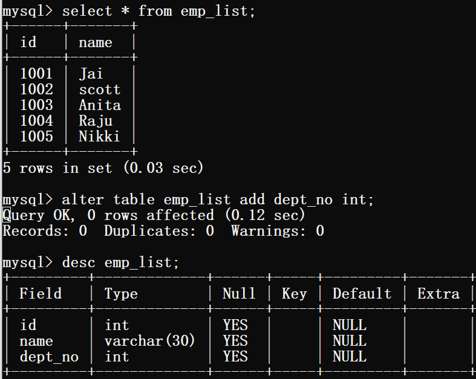
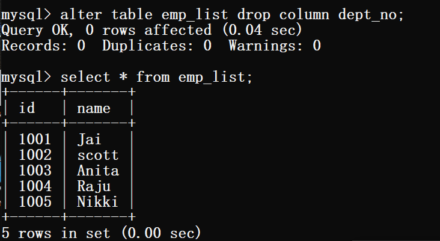

The ALTER TABLE statement in Structured Query Language allows you to add, modify, and delete columns of an existing table. This statement also allows database users to add and remove various SQL constraints on the existing tables. Any user can also change the name of the table using this statement. So, there are many ways to using the alter command. The alter command is used with add, modify and drop keyword to apply into the particular table.
In many situations, you may require to add the columns in the existing table. Instead of creating a whole table or database again you can easily add single and multiple columns using the ADD keyword.
ALTER TABLE table_name ADD column_name datatype;
The MODIFY keyword is used for changing the column datatype of the existing table.
ALTER TABLE table_name MODIFY column_name datatype;
In many situations, you may require to delete the columns from the existing table. Instead of deleting the whole table or database you can use DROP keyword for deleting the columns.
ALTER TABLE table_name DROP column column_name;
The ALTER command is also used to add and drop the constraints.